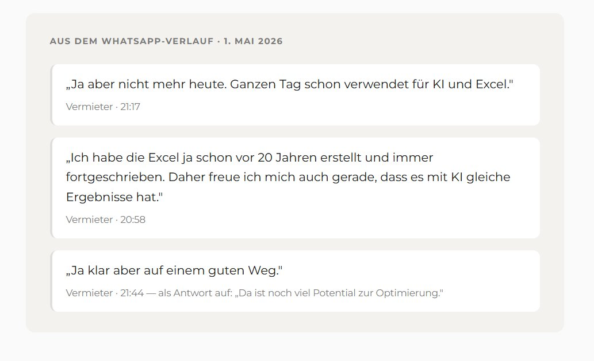
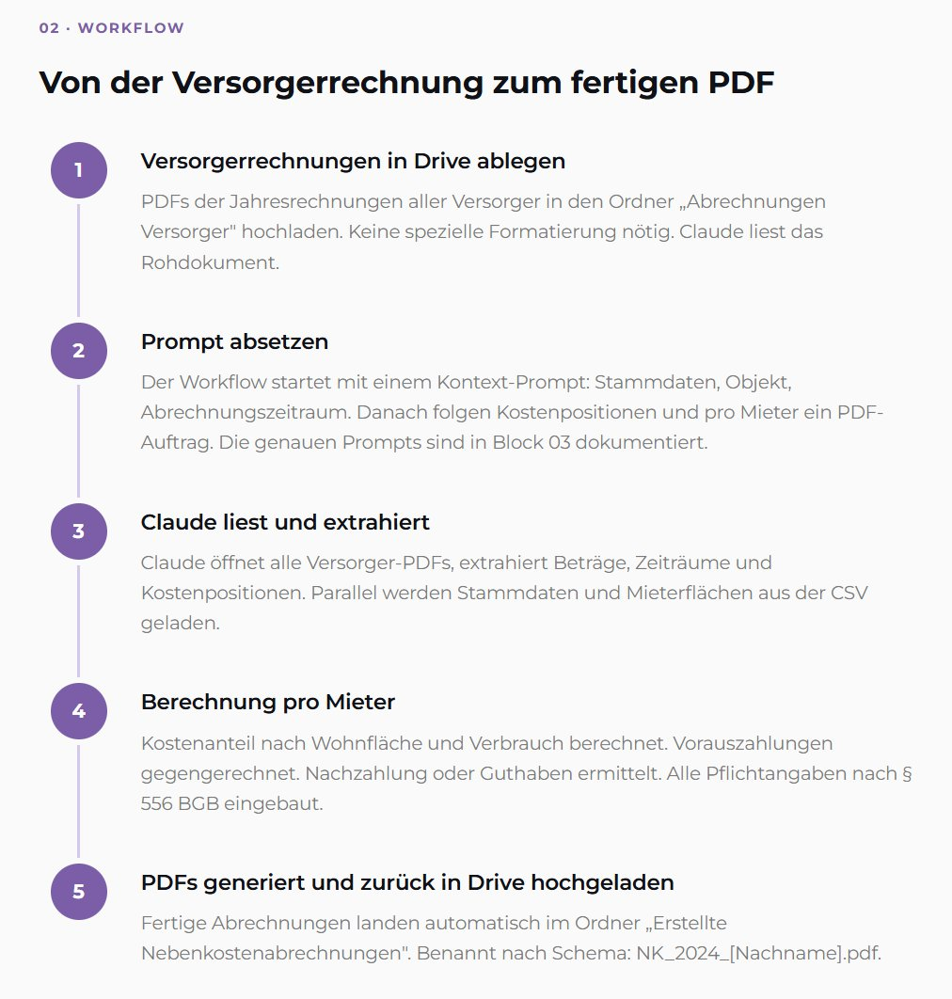
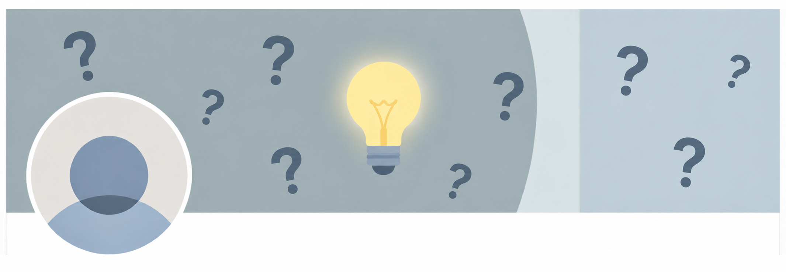
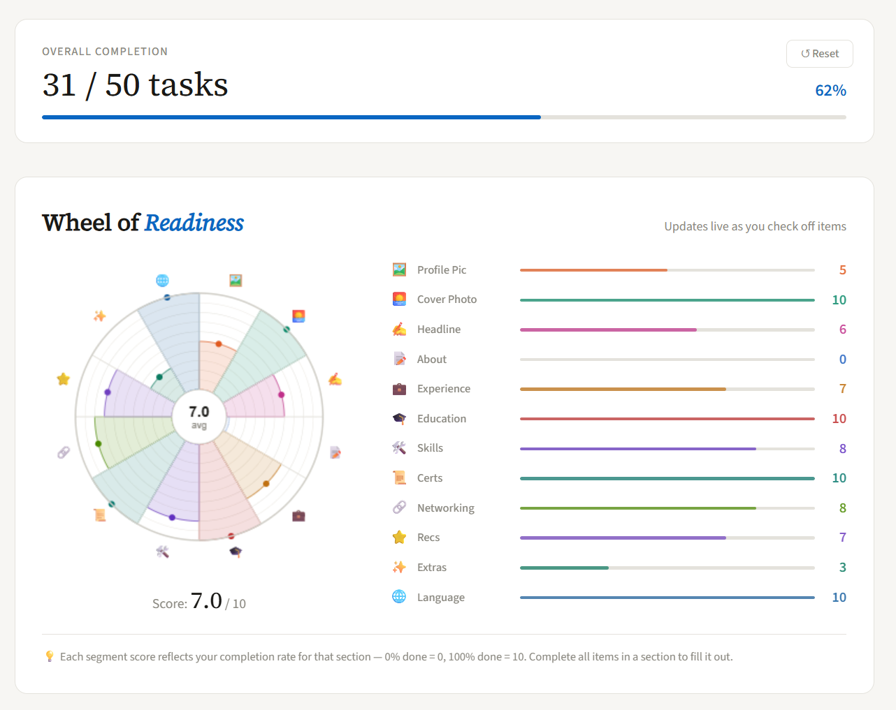

Design-to-Code Portfolio
Sebastian Weber
UX/UI Designer aus Köln.
Ich designe Interfaces und baue sie selbst.

Case Study
Den ganzen Tag der Arbeit für KI und Excel
In-context interview ohne Leitfaden. Drei UX-Entscheidungen. Und warum kein Figma-Prototyp die richtige Antwort war.
Case Study lesen →
AI Workflow
Nebenkostenabrechnung per Prompt
Wie ein Prompt eine Stunde Arbeit ersetzt. Google Drive, Claude MCP, vollautomatische PDF-Generierung.
Workflow ansehen →
Case Study
LinkedIn Profile Readiness Guide
Wie aus einem Orientierungsproblem ein interaktives Browser-Tool wurde. Ohne Framework, ohne Design-Tool, ohne Team.
Case Study lesen →
Tool
LinkedIn Profile Readiness Guide
Interaktive Checkliste für dein LinkedIn-Profil. Mit Live-Visualisierung des Fortschritts — direkt im Browser, ohne Login.
Tool ausprobieren →